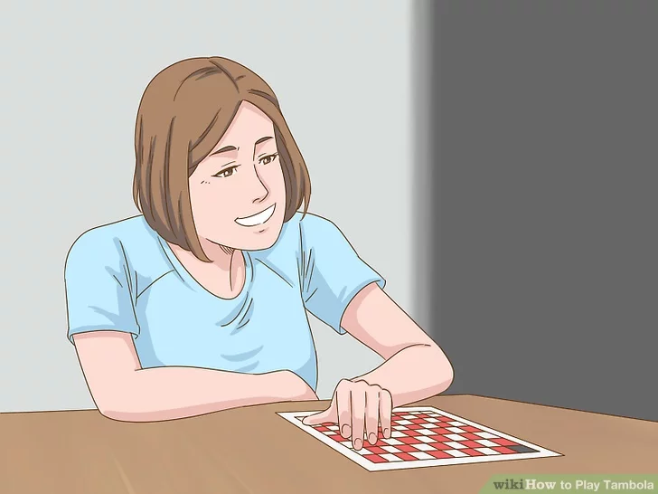
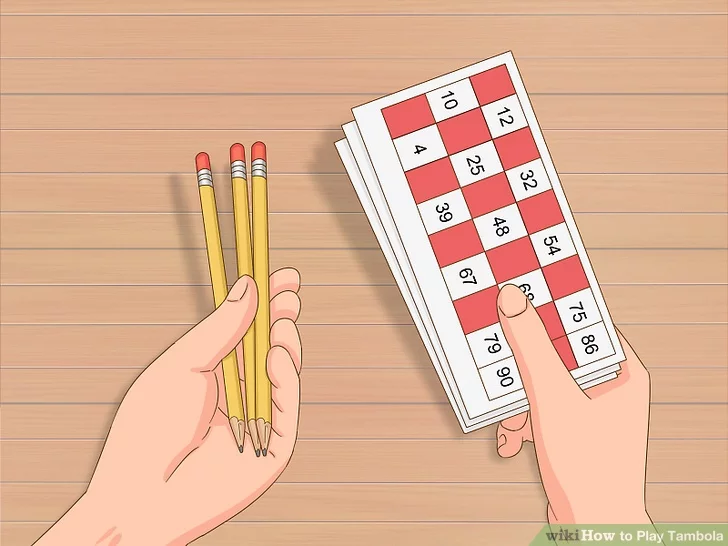
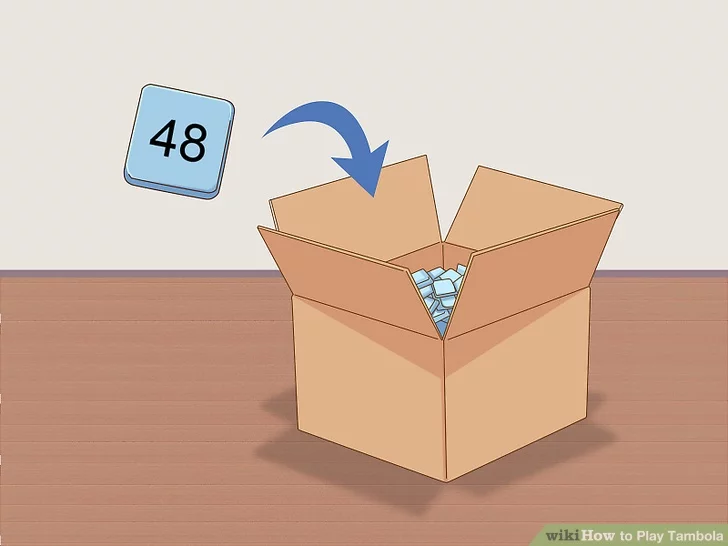
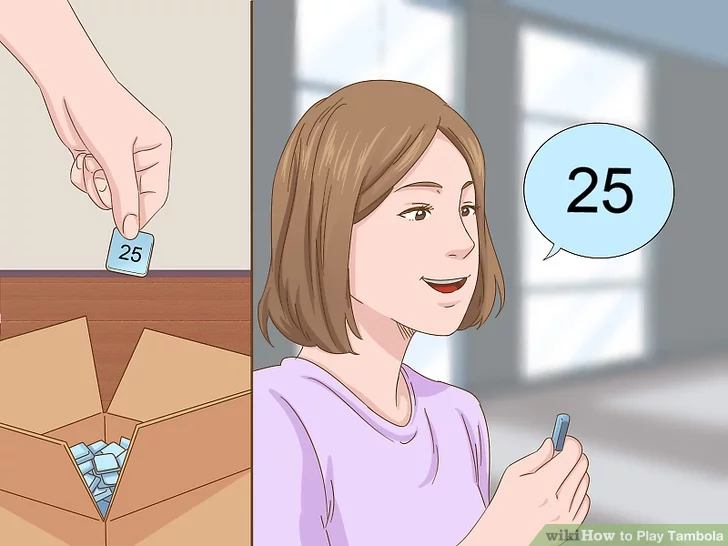
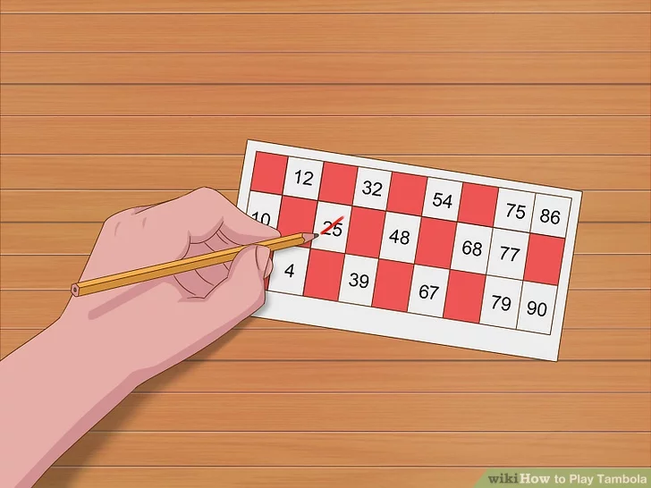
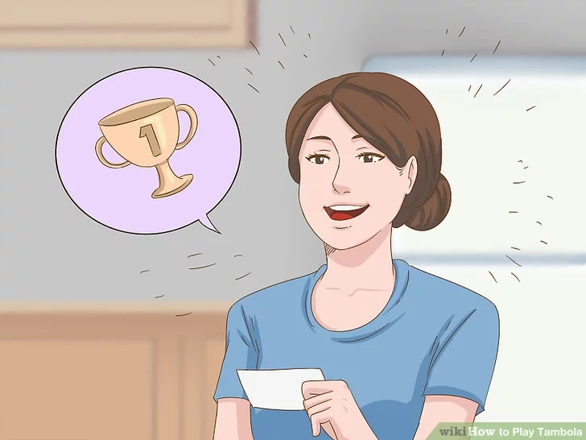
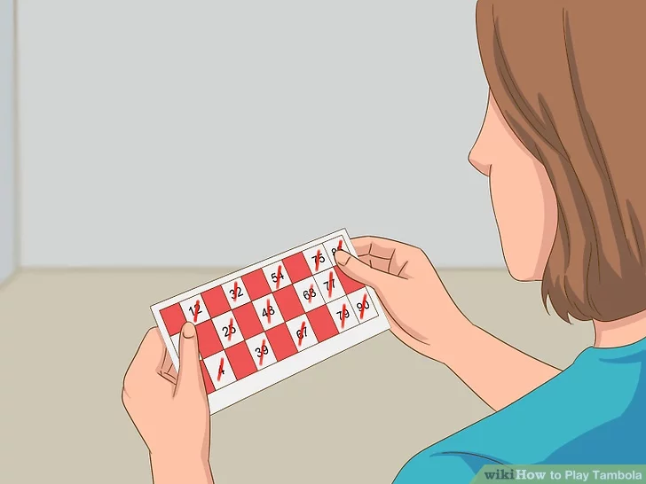
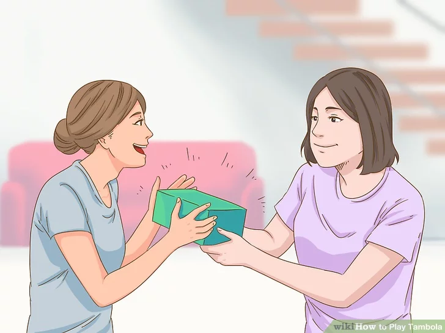

Tambola is a popular version of Bingo and Housie which is played widely across India and Pakistan. The caller reads out the numbers that are randomly drawn to the audience. The players cross the number off their ticket if they have it after each number is called out. If you think that you have a winning point, announce it quickly to make sure that you can claim the prize!
Tembola Instructions
Download Instructions
For Saving Instructions Offline Click The Button Below
.The winning point of the game is the rule that determines how a player can win. The caller will let everyone know before playing the game what the winning point is. A popular winning point for tambola games is full house, which means that the ticket with all of the numbers struck first wins.[1]
.Early 5 is another common winning point option. The player who first strikes 5 numbers in any row wins. This is best if you only want to play a short game.
.First row is another winning point alternative. This means that the player who is first to strike all of the numbers along the top row wins.
.Corners is another winning point option if you want to play a short game. The player who can strike each number in the 4 corners of the ticket first, wins. This means that the first and last numbers of the top and bottom rows will be crossed out.
.There are many variations on what the winning point can be for the game. If you are organizing the game, feel free to make up your own winning point, or explore the many ideas available either online or with other tambola players.
2
Designate a tambola caller.

.Choose a person who is confident and can speak loudly and clearly. They will be responsible for drawing out the numbers and calling them to the audience.[2]
.This person will also be responsible for verifying any potential winning tickets to make sure that the numbers are correct.
.The caller doesn’t have to be the caller for all of the rounds. If you are playing multiple rounds of tambola, pick a different caller for each round so that everyone have have a turn to play.
3
Give each player a tambola ticket, and a pen or a pencil.

.Each player will need a new ticket for each round. If you are playing informally with family or friends, hand a ticket out to each person. If you are playing a commercial game, each player will purchase their own ticket before the game begins.[3]
.Each player will need a new ticket for each round. If you are playing informally with family or friends, hand a ticket out to each person. If you are playing a commercial game, each player will purchase their own ticket before the game begins.[3]
.Tambola tickets have 3 horizontal rows and 9 vertical columns, which makes 27 boxes in total. There are 5 numbers in each horizontal row, with the remaining 4 boxes randomly blocked out. The first column has numbers from 1-9, the second from 10-19, and so on, up to the number 90.[4]
.You can purchase tambola tickets online, or you can make your own using a random number generator.
.Make sure that each person has a pen or pencil before the game begins so that they can cross off the numbers as they are called.[5]
4
Set up the box or container that holds the numbers.

.Place all of the numbers from 1-90 into the container. Make sure that the sides of the box aren’t transparent so that the caller can’t see what number they are drawing. Fit the lid to the box so that the caller can shake the box before calling each number.[6]
.If you are playing at a big, commercial game, there will usually be a machine that will draw the numbers for the caller.[7]
5
Draw a number and call it out to the audience if you are the caller.

.Shake the box containing the numbers, and choose 1 without looking at it. Read the number loudly and clearly to everyone playing, so that they can strike it off their ticket if necessary.[8]
.Some experienced callers like to use nicknames for the numbers that they read out to make the game more fun. However, they will always say the actual name for the number too.[9]
.Some nicknames for the numbers include “Lone ranger” for the number 1, “Colors of the rainbow” for the number 7, and “Valentine’s Day” for the number 14.[10]
.If you play tambola regularly with family or friends, come up with your own nickname for each number to make the game more interesting.
6
Strike the numbers off as they are called if you are playing the game.

.As the caller reads out each number, check the appropriate column to see if you can strike a number off. If you don’t have the number that has been called out on your ticket, wait for the next number to be called.[11]
7
Claim for the winning point if you think you have one.

.Be ready to stand up and shout if you think that you have won the game! Often you can only win the game if you announce that you have won immediately, rather than waiting until after the next number has been called.
.If you miss your chance to announce that you have won, you will usually miss out on your entitlement to the prize.
.More than 1 person may realize that they have the winning point after a number is called. In this case, the first person to announce it goes to the caller to have their ticket verified.
8
Verify the winning point if you are the caller.

Check the tambola ticket to see if the winning point has been awarded by the last number called. Announce to the group playing if that particular player has won or not.[12]
.If the player has won, this often ends the game. However you can decide to keep playing if you want to draw for second and third prizes.
.If the player doesn’t have a winning point, keep calling numbers and playing the game until someone wins.
9
Award the prize to the winner.

.If there are prizes for the winning ticket or tickets, give these out to the players. The prizes are usually cash.
.For an informal game with family or friends, you can be more creative with the prizes. Try a voucher to a local restaurant, a delicious treat, a flower bouquet, or a certificate with the winners name on it.